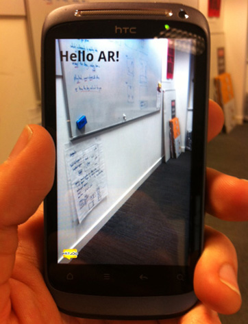

<html>
<head>
<meta charset="utf-8"/>
<title>Hello AR!</title>
<!-- ARchitect framework - for the phone -->
<script src="architect://architect.js"></script>
<!-- ARchitect Desktop Engine - for the desktop -->
<script src="js/ade.js"></script>
</head>
<body>
<!-- Transparent overlay on top of camera view -->
<h1>Hello AR!</h1>
</body>
</html>
Looks like this on desktop
Pretty, huh?
Looks like this on mobile

Nearly ready for the app store!
Adding locations
AR.context.onLocationChanged = function(lat, lon, alt, acc) {
// Add a random point of interest near to the user
var objectLat = lat + ((Math.random()-0.5) / 1000);
var objectLong = lon + ((Math.random()-0.5) / 1000);
var geoLocation = new AR.GeoLocation(objectLat, objectLong);
var circle = new AR.Circle(5, {style: {fillColor: '#FF0000'}});
var geoObject = new AR.GeoObject(geoLocation,
{drawables: {cam: circle}});
}
Looks like this on desktop
Debugger's delight!
Looks like this on mobile
AR at its finest!
Let's add dinosaurs!
var icon = new AR.imageResource('img/dinosaur.png',
{onLoaded: loadedIcon});
function loadedIcon() {
var drawable = new AR.ImageDrawable(icon, 4,
{enabled: true, triggers: {onClick: showCafe}});
var myGeoObject = new AR.GeoObject(myGeoLocation,
{drawables: {cam: drawable}});
}
And make 'em noisy
var soundToStream = new AR.Sound('tyrannosaurus-roar.mp3',
{onError: errorLoadingSound,
onFinishedPlaying: finishedPlaying});
soundToStream.play();
var soundToPreload = new AR.Sound('stegosaurus-stomp.mp3',
{onError: errorLoadingSound,
onLoaded: readyToPlay,
onFinishedPlaying: finishedPlaying});
soundToPreload.load();
Debugging those dinos
AR.logger.activateDebugMode();
function finishedPlaying() {
AR.logger.info('Tada!');
}
function errorLoadingSound() {
AR.logger.error('Uh oh');
}
“I have a red circle & some dinosaurs... Let's push it live!”
navigator.getUserMedia({video:true}, gotStream);
function gotStream(stream) {
// Obtain a blob URL reference to the stream object
var url = createObjectURL(stream);
// And feed it into the video element
video.src = url;
}
JSARToolkit detector
// Draw video onto canvascanvasContext.drawImage(video, 0, 0, width, height);
// Raster object reads image data from canvasraster = new NyARRgbRaster_Canvas2D(canvas);
// Detection engine - detects multiple markers
detector = new FLARMultiIdMarkerDetector(param, mWidth);
// Gets number of detected markers
var count = detector.detectMarkerLite(raster, thresh);
// Get transformation matrix from specific marker
detector.getTransformMatrix(index, resultMatrix);
WebGL / Three.js
loader = new THREE.JSONLoader();
loader.load( 'stegosaurus.js', function(geometry) {
model = new THREE.Mesh(geometry, material);
});
...
scene.add(model);
model.matrix.setFromArray(transformMatrix);